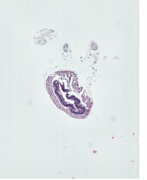
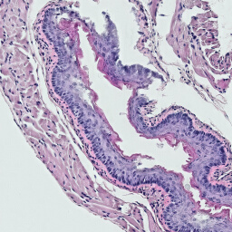

Using the Zarr Tile Sink
The ZarrFileTileSource class has file-writing capabilities; an empty image can be created, image data can be added as tiles or arbitrary regions, and the image can be saved to a file in any of several formats.
Typically, this class is called a “source” when reading from a file and a “sink” when writing to a file. This is just a naming convention, but the read mode and write mode are not mutually exclusive.
Installation
[1]:
# This will install large_image with the zarr source
!pip install large_image[tiff,zarr,converter] --find-links https://girder.github.io/large_image_wheels
# For maximum capabilities in Jupyter, also install ipyleaflet so you can
# view zoomable images in the notebook
!pip install ipyleaflet
[2]:
# Ask JupyterLab to locally proxy an internal tile server
import importlib.util
import large_image
if importlib.util.find_spec('google') and importlib.util.find_spec('google.colab'):
# colab intercepts localhost
large_image.tilesource.jupyter.IPyLeafletMixin.JUPYTER_PROXY = 'https://localhost'
else:
large_image.tilesource.jupyter.IPyLeafletMixin.JUPYTER_PROXY = True
Sample Data Download
For this example, we will use data from a sample file. We will copy and modify tiles from this image, writing the modified data to a new file.
[2]:
!curl -L -C - -o example.tiff https://demo.kitware.com/histomicstk/api/v1/item/58b480ba92ca9a000b08c899/download
% Total % Received % Xferd Average Speed Time Time Time Current
Dload Upload Total Spent Left Speed
100 12.3M 100 12.3M 0 0 2952k 0 0:00:04 0:00:04 --:--:-- 2952k
[3]:
original_image_path = 'example.tiff'
processed_image_path = 'processed_example_1.tiff'
source = large_image.open(original_image_path)
# view the metadata
source_metadata = source.getMetadata()
source_metadata
[3]:
{'levels': 7,
'sizeX': 9216,
'sizeY': 11264,
'tileWidth': 256,
'tileHeight': 256,
'magnification': 40.0,
'mm_x': 0.00025,
'mm_y': 0.00025,
'dtype': 'uint8',
'bandCount': 3}
[4]:
# show source as a static thumbnail
source.getThumbnail()[0]
[4]:

[5]:
# show the source image in an interactive viewer
source
Writing Processed Data to a New File
[7]:
from skimage.color.adapt_rgb import adapt_rgb, hsv_value
from skimage import filters
# define some image processing function
@adapt_rgb(hsv_value)
def process_tile(tile, footprint_size):
return filters.unsharp_mask(
tile, radius=footprint_size,
)
[7]:
# create a sink, which is an instance of ZarrFileTileSource and has no data
sink = large_image.new()
# compare three different footprint sizes for processing algorithm
# computing the processed image takes about 1 minute for each value
footprint_sizes = [1, 10, 50]
print(f'Processing image for {len(footprint_sizes)} frames.')
# create a frame for each processed result
for i, footprint_size in enumerate(footprint_sizes):
print('Processing image with footprint_size = ', footprint_size)
# iterate through tiles, getting numpy arrays for each tile
for tile in source.tileIterator(format='numpy'):
# for each tile, run some processing algorithm
t = tile['tile']
processed_tile = process_tile(t, footprint_size) * 255
# add modified tile to sink
# specify tile x, tile y, and any arbitrary frame parameters
sink.addTile(processed_tile, x=tile['x'], y=tile['y'], footprint=i, footprint_value=footprint_size)
# view metadata
sink.getMetadata()
Processing image for 3 frames.
Processing image with footprint_size = 1
Processing image with footprint_size = 10
Processing image with footprint_size = 50
[7]:
{'levels': 6,
'sizeX': 9216,
'sizeY': 11264,
'tileWidth': 512,
'tileHeight': 512,
'magnification': None,
'mm_x': 0,
'mm_y': 0,
'dtype': 'float64',
'bandCount': 3,
'frames': [{'Frame': 0,
'IndexFOOTPRINT': 0,
'ValueFOOTPRINT': 1,
'Index': 0,
'Channel': 'Band 1'},
{'Frame': 1,
'IndexFOOTPRINT': 1,
'ValueFOOTPRINT': 10,
'Index': 1,
'Channel': 'Band 1'},
{'Frame': 2,
'IndexFOOTPRINT': 2,
'ValueFOOTPRINT': 50,
'Index': 2,
'Channel': 'Band 1'}],
'ValueFOOTPRINT': {'values': [1, 10, 50],
'uniform': True,
'units': None,
'min': 1,
'max': 50,
'datatype': 'int64'},
'IndexRange': {'IndexFOOTPRINT': 3},
'IndexStride': {'IndexFOOTPRINT': 1},
'channels': ['Band 1'],
'channelmap': {'Band 1': 0}}
[8]:
# show the result image in an interactive viewer
# the viewer includes a slider for this multiframe image
# switch between frames to view the differences between the values passed to footprint_size
sink
Edit Attributes and Write Result File
[9]:
# set crop bounds
sink.crop = (3000, 5000, 2048, 2048)
# set mm_x and mm_y from source metadata
sink.mm_x = source_metadata.get('mm_x')
sink.mm_y = source_metadata.get('mm_y')
# set image description
sink.imageDescription = 'processed with scikit-image'
# set additional metadata
sink.additionalMetadata = dict(
filter='unsharp_mask',
)
# add original thumbnail as an associated image
sink.addAssociatedImage(source.getThumbnail()[0], imageKey='original')
# write new image as tiff (other format options include .zip, .zarr, .db, .sqlite, .svs, etc.)
sink.write(processed_image_path)
View Results
[10]:
# open written file as a new source
# this will be opened as a TiffFileTileSource
source_2 = large_image.open(processed_image_path)
# view metadata
source_2.getMetadata()
[10]:
{'levels': 4,
'sizeX': 2048,
'sizeY': 2048,
'tileWidth': 256,
'tileHeight': 256,
'magnification': None,
'mm_x': None,
'mm_y': None,
'dtype': 'uint16',
'bandCount': 3,
'frames': [{'Channel': 'Band 1', 'Frame': 0, 'Index': 0, 'IndexFOOTPRINT': 0},
{'Channel': 'Band 1', 'Frame': 1, 'Index': 1, 'IndexFOOTPRINT': 1},
{'Channel': 'Band 1', 'Frame': 2, 'Index': 2, 'IndexFOOTPRINT': 2}],
'IndexRange': {'IndexFOOTPRINT': 3},
'IndexStride': {'IndexFOOTPRINT': 1},
'channels': ['Band 1'],
'channelmap': {'Band 1': 0}}
[11]:
# show source_2 as a static thumbnail
source_2.getThumbnail()[0]
[11]:

[12]:
# show source_2 in an interactive viewer
source_2